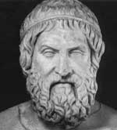

Öğrenen insan acı çekmelidir.
— Aiskhylos, Agamemnon’dan
Tragedyanın kurucusu olarak kabul edilen Aiskhylos (MÖ 525-455), oyunları günümüze kadar ulaşan sayılı antik çağ oyun yazarından birisidir. Demokratik Atina’nın kuruluş döneminde yazılmış olan oyunları, hem Batı dramasının başlangıç noktası hem de antik Yunan kültürüne açılan bir pencere olarak görülebilir.

Atina kentini çevreleyen Attica adlı bölgede doğan Aiskhylos, Atina ordusunda görev yaptı. MÖ 490 yılındaki Marathon Savaşı’nda ve MÖ 480 yılındaki Salamis Savaşı’nda yer aldı. Pers İmparatorluğu’na karşı kazanılan bu zaferler Atina’nın bağımsızlığını korumasını sağladı. Bu mücadeleler Aiskhylos’un en eski oyunu olan The Persians’ın (Persler / MÖ 472) tarihsel arka planını oluşturmaktadır.
İlginç olan Aiskhylos’un bu oyununda savaşı muzaffer Yunanlıların değil Perslerin gözünden anlatmasıdır. Olaylar Pers başkenti Susa’da geçmektedir. Perslerin yenilgisi Kral Xerxes’in (MÖ 519-465) kibri yüzünden yaşanan bir trajedi olarak ele alınmaktadır. Aiskhylos’un tasvirine göre Xerxes, Hellespont üzerine bir köprü inşa ederek tanrıların öfkesini üzerine çekmiştir.
Bir oyun üçlemesi olan Oresteia (MÖ 458), Argos’un efsanevi kralı Agamemnon’u konu alır. Tıpkı Persler gibi, bu üçlemede de kahramanlar sonlarını getiren ölümcül hatalara imza atarlar. Oresteia, Batı edebiyatının ünlü karakterlerine hayat vermiştir. Örnek olarak kehanet yeteneği olan, ancak insanların ona inanmadığı Cassandra verilebilir. Aiskhylos’un trajedileri Batı dramasının temellerini atmıştır. Kendinden sonra gelen Sophocles (MÖ 496-406) ve Euripides (MÖ 484-406) gibi oyun yazarları üzerinde çok önemli bir etkisi olmuştur.
Bunlar dışında Aiskhylos’un hayatı hakkında pek az şey bilinmektedir. Atina’da düzenlenen birkaç tiyatro yarışmasını kazanmıştır. Yazdığı oyunların toplam sayısının doksanın üzerinde olduğu tahmin edilmektedir. Bunlardan yalnızca yedisi günümüze kadar ulaşabilmiştir. Bir ziyaret için bulunduğu Sicilya Adası’nda ölmüştür. Efsaneye göre bir kuş taşıdığı bir kaplumbağayı başına düşürerek ölümüne neden olmuştur.
Ek Bilgiler
1- Aiskhylos tarafından yazıldığı düşünülen Prometheus Bound (Prometheus Zincire Vuruldu) oyunu, İngiliz romantik şair Percy Bysshe Shelley’nin (1792-1822) destansı şiiri Prometheus Unbound’a (Prometheus Zincirini Kırdı) ilham kaynağı olmuştur.
2- Eski Atina’da sahnede şiddet gösterilemezdi. Bu nedenle Aiskhylos’un oyunlarında bol bol yer verdiği şiddet, sahne dışında gerçekleştirilir ve ayrıntılar izleyicinin hayal gücüne bırakılırdı.
3- Aiskhylos’un oyunlarının büyük bölümü Atina’daki Dionysos tiyatrosunda sahnelenmiştir. 17 bin kişilik kapasitesi olan tiyatronun kalıntıları Akropolis’in güneyinde yer almaktadır.